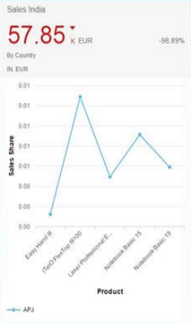
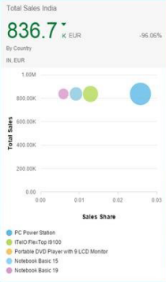
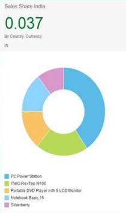
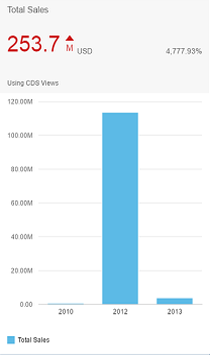
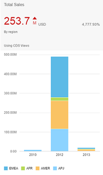
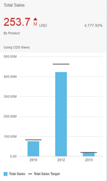
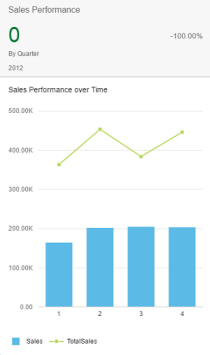
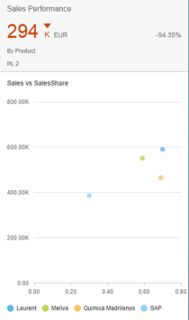

Chart Cards Used in Overview Pages
This section describes the analytic chart cards you can use in overview pages.
Line Chart
- Dimensions for which the role is set to category make up the x-axis (category axis). If no dimension is specified with this role, the first dimension is used as the x-axis. We recommend using only time-based dimensions (for example, day, date, quarter, or year) for the category axis of a line chart.
- Dimensions for which the role is set to series make up the line segments of the chart, with different colors assigned to each dimension value. If multiple dimensions are assigned to this role, the values of all the dimensions together are considered as one dimension and a color is assigned.
- Measures make up the y-axis (value axis). If there are multiple measures, then each measure is represented by a different colored line in the chart area.
The line chart supports a color palette for semantic coloring.
Bubble Chart
-
The first measure for which the role is set to an axis is assigned to the valueAxis feed. The UID makes up the x-axis.
-
The first measure for which the role is set to an axis is assigned to the valueAxis2 feed and the UID makes up the y-axis.
- The remaining measure is assigned to the bubbleWidth feed'sUID. This determines the size of the bubble.
- The dimensions for which the role is set to series are
assigned to the feed's UID color. Different values for
this dimension in the data set result in different colored data points in
the chart. If multiple dimensions are set with the category role, only the
first dimension is considered. If the role series is
assigned to both dimensions, then each combination of the dimension member
gets a unique color.
For example, if role series is assigned to the dimensions "Year" and "Country" then "India/2015", "India/2016", "Germany/2015", "Germany/2016" are represented as different colored bubbles. If no role is assigned to a dimension, then the dimension members gets the same color. In the above example, if no color has been assigned to a year, then the bubbles only have two colors - one for all records for India and one for all records for Germany, irrespective of the year.
- The dimensions for which the role is set to a category are assigned to the shape feed's UID. Different values for this dimension in the data set result in differently shaped data points in the chart. If multiples dimensions are set with the category role, only the first dimension is considered.
Example
The bubble chart supports a color palette for semantic coloring.
Example of Line and Bubble Chart Cards
|
 |
 |
|
Line Chart Card |
Bubble Chart Card |
Donut Chart
A donut chart displays data as the differently colored sections of a donut. The value of the measure determines the size of each section. Donut charts help the viewer to quickly determine the key area that needs attention. For example, you can view numbers and percentages. You can also disable navigation in the graph (optional).
Donut charts require exactly one measure. You can provide more than one dimension. If this is the case, the dimensions are stacked so that the sections of the chart represent the combination of all dimensions. For example, if you define Sales as your measure, and provide two dimensions: Year and Country, the chart displays the sales data of each combination of year and country as a separate colored section.
Stable Coloring
-
Configure a color map object that maps the key-value pairs between dimension and color values in the colorPalette property of the descriptor configuration.
-
Enable stable coloring by setting the bEnableStableColoring property to true in card settings.
-
The chart dimension property (Role) in the chart annotation has to be a Category.
-
Define the com.sap.vocabularies.Common.v1.Text annotation for a dimension property within the entity type. This is considered to be a label for any individual dimensions value and also for rendering appropriate texts in the chart's legend.
Others Sector
You can pass filter conditions to target applications other than the dimensions shown on the donut chart. For example, in a donut chart with the sections A, B, C, and Others, navigation from Others section leads to a filter condition that excludes A, B, and C.
Column Chart
Use this chart type to display data, such as total product sales over a period of years in columns. The number of columns is equal to the number of measures in the annotation file.
Column charts need to have at least one measure and one dimension. Irrespective of the role defined for the measure in the annotation file, every measure is represented as a separate column. Similarly, regardless of the role defined in the annotation file, every dimension is added to the axis category (x-axis).
Example of Donut and Column Chart Cards
|
 |
 |
|
Donut Chart Card |
Column Chart Card |
Stacked Column Chart
The stacked column chart supports a color palette for semantic coloring.
Vertical Bullet Chart
Vertical bullet charts accept at least one measure and one dimension. All dimensions, regardless of their role, are assigned to the axis category. All measures with the axis1 role are represented as solid-colored columns, which represent actual values. All measures with axis2 role are shown as a solid black line, which represents the target value.
Example of Stacked Column and Vertical Bullet Chart Cards
|
 |
 |
|
Stacked Column Chart Card |
Vertical Bullet Chart Card |
Combination Chart
A combination chart lets you combine and view two or more chart types in a single chart. For example, combining a column and line chart in the same visualization lets you compare values of different categories. This provides a clear view and helps you compare categories.
-
The first measure is used for the column format and the subsequent measure is displayed as a line within the chart.
-
We recommend only using one time-based dimension for the category axis.
-
All measures, irrespective of their roles, are assigned to the feed's UID value axis. You need to have at least two measures for combination chart cards.
-
For all dimensions with a role:
-
A Category is assigned to the category axis with the default role. You need to have at least one role assigned to the category axis.
-
A Series is assigned to the feed UID's color and is displayed within the chart area with a differently colored column and line combinations for each of its members.
-
Example
The combination chart supports a color palette for semantic coloring.
Scatter Chart
A scatter chart card supports a maximum of two dimensions. If the dimension is not marked with a role, then all members of the dimension are plotted as equal-sized bubbles of the same color in the chart. You can assign only one dimension to the Series role and all members of this dimension get a different color. A maximum of only one dimension can be assigned to the Category role and all members of such a dimension get a different shape.
Example
Example Combination and Scatter Chart Cards
|  |  |
|
Combination Chart Card |
Scatter Chart Card |
Waterfall Chart
-
Waterfall charts without a time dimension
-
Waterfall charts with a time dimension represent the change of a cumulative value over time
-
Semantic waterfall charts (semantic coloring based on com.sap.vocabularies.UI.v1.CriticalityCalculation or com.sap.vocabularies.UI.v1.Criticality in the datapoint annotation)
Time Series Chart
-
The chart type must be either vertical bullet, stacked column, scatter, line, bubble, column, waterfall, combination, or dual combination.
-
The chart is configured with only one dimension for bubble, column, waterfall, and combination charts. However, you can use two dimensions for line charts. The second dimension can be the color dimension. The dimension with the uid color has to have the Series role assigned to it.
- The data type of the dimension is either edm.datetime or edm.string. If the data type is edm.string, then it needs to have the additional annotation in the OData metadata annotation: sap:semantics:”yearweek (YYYYWW) or yearmonth (YYYYMM) or yearquarter (YYYYQ)”.
-
If it is a bubble chart, it needs to have two measures. If the chart is a combination chart, it needs to have at least two measures.
-
Vertical bullet, stacked column, and scatter charts need at least one measure and one dimension. Extra color and shape dimensions are suppored only in scatter charts.
Dual Combination Chart
Overview pages support a dual combination chart type that lets you view individual data points for a particular dimension. The chart contains two axis values with a line chart representing the multiple measures.
-
The first measure is displayed as a column chart type and subsequent measures display as a line within the chart.
-
We recommend using only one time-based dimension for the category axis.
-
Configure at least two measures. Assign the measures to the feed's UID value axis, irrespective of the roles.
-
Assign at least one role to the category axis. All dimensions with the Category role are assigned to the category axis. The Category role is the default role.